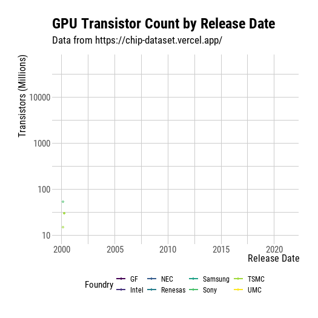

library(ggplot2)
library(tidyverse)
library(lubridate)
library(hrbrthemes)
library(showtext)
library(rsvg)
library(gganimate)2022 Week 34: Moore’s Law
Setup
font_add_google("Roboto Condensed")
showtext_auto()Load Data
chip_dataset.csv downloaded from Vercel.
Redistribution of the dataset is not permitted.
chips <- read.csv("Data/chip_dataset.csv")Clean Data
chips <- chips |>
mutate(Date = as_date(Release.Date)) |>
filter(Foundry != "Unknown" &
!is.na(Date) &
!is.na(Transistors..million.) &
Type == "GPU") Warning: 75 failed to parse.Get Regression Lines
chipMod <- chips |>
mutate(Date = as.numeric(Date)) |>
glm(Transistors..million. ~ Date + Foundry,
family = "poisson",
data = _)
predInput <- chips |>
mutate(Foundry = factor(Foundry),
Date = as.numeric(Date)) |>
group_by(Foundry) |>
summarise(min = min(Date),
max = max(Date)) |>
pivot_longer(cols = c("min", "max"),
values_to = "Date")
chipPreds <- predict(chipMod,
newdata = predInput[,c(3,1)],
type = "response") |>
data.frame() |>
cbind(predInput) |>
rename(Transistors..million. = 1) |>
mutate(Date = as_date(Date))Plot
linePlot <- chips |>
ggplot(aes(x = Date,
y = Transistors..million.,
color = Foundry)) +
geom_point(aes(group = seq_along(Date)),
alpha = 0.5) +
geom_line(data = chipPreds, size = 0.8) +
scale_y_log10() +
theme_ipsum_rc(axis_title_size = "12") +
scale_color_viridis_d() +
theme(legend.position = "bottom") +
xlab("Release Date") +
ylab("Transistors (Millions)") +
ggtitle(label = "GPU Transistor Count by Release Date",
subtitle = "Data from https://chip-dataset.vercel.app/") +
transition_reveal(Date)
animate(linePlot, end_pause = 10,
height = 7,
width = 7,
units = "in",
res = 75) |>
anim_save("Out/2022-08-23.gif", animation = _)
Session Info
sessionInfo()R version 4.2.1 (2022-06-23 ucrt)
Platform: x86_64-w64-mingw32/x64 (64-bit)
Running under: Windows 10 x64 (build 19043)
Matrix products: default
locale:
[1] LC_COLLATE=English_Australia.utf8 LC_CTYPE=English_Australia.utf8
[3] LC_MONETARY=English_Australia.utf8 LC_NUMERIC=C
[5] LC_TIME=English_Australia.utf8
attached base packages:
[1] stats graphics grDevices utils datasets methods base
other attached packages:
[1] gganimate_1.0.7 rsvg_2.3.1 showtext_0.9-5 showtextdb_3.0
[5] sysfonts_0.8.8 hrbrthemes_0.8.0 lubridate_1.8.0 forcats_0.5.2
[9] stringr_1.4.1 dplyr_1.0.9 purrr_0.3.4 readr_2.1.2
[13] tidyr_1.2.0 tibble_3.1.7 tidyverse_1.3.2 ggplot2_3.3.6
loaded via a namespace (and not attached):
[1] httr_1.4.4 viridisLite_0.4.1 jsonlite_1.8.0
[4] modelr_0.1.9 assertthat_0.2.1 googlesheets4_1.0.1
[7] cellranger_1.1.0 yaml_2.3.5 progress_1.2.2
[10] gdtools_0.2.4 Rttf2pt1_1.3.10 pillar_1.8.1
[13] backports_1.4.1 glue_1.6.2 extrafontdb_1.0
[16] digest_0.6.29 rvest_1.0.3 colorspace_2.0-3
[19] plyr_1.8.7 htmltools_0.5.2 pkgconfig_2.0.3
[22] broom_1.0.1 magick_2.7.3 haven_2.5.1
[25] scales_1.2.1 tweenr_2.0.1 tzdb_0.3.0
[28] googledrive_2.0.0 generics_0.1.3 farver_2.1.1
[31] ellipsis_0.3.2 withr_2.5.0 cli_3.3.0
[34] magrittr_2.0.3 crayon_1.5.1 readxl_1.4.1
[37] evaluate_0.16 fs_1.5.2 fansi_1.0.3
[40] xml2_1.3.3 tools_4.2.1 prettyunits_1.1.1
[43] hms_1.1.2 gargle_1.2.0 lifecycle_1.0.1
[46] munsell_0.5.0 reprex_2.0.2 compiler_4.2.1
[49] systemfonts_1.0.4 rlang_1.0.4 grid_4.2.1
[52] rstudioapi_0.14 htmlwidgets_1.5.4 rmarkdown_2.16
[55] gtable_0.3.1 curl_4.3.2 DBI_1.1.3
[58] R6_2.5.1 knitr_1.40 fastmap_1.1.0
[61] extrafont_0.18 utf8_1.2.2 stringi_1.7.6
[64] Rcpp_1.0.8.3 vctrs_0.4.1 dbplyr_2.2.1
[67] tidyselect_1.1.2 xfun_0.31